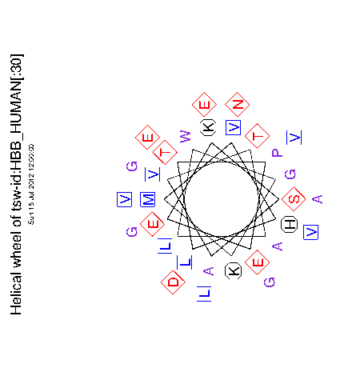

|
|
pepwheel |
pepwheel
displays peptide sequences in a helical representation.This gives a view of a helix from a protein sequence looking down the axis of the helix.
It is useful for highlighting amphipathicity and other properties of residues around a helix.
% pepwheel tsw:hbb_human -send 30 Shows protein sequences as helices Graph type [x11]: cps Created pepwheel.ps |
Go to the input files for this example
Go to the output files for this example
Standard (Mandatory) qualifiers:
[-sequence] sequence Sequence USA
-graph graph Graph type
Additional (Optional) qualifiers (* if not always prompted):
-steps integer The number of residues plotted per turn is
this value divided by the 'turns' value.
-turns integer The number of residues plotted per turn is
the 'steps' value divided by this value.
* -squares string By default the aliphatic residues ILVM are
marked with squares.
* -diamonds string By default the residues DENQST are marked
with diamonds.
* -octags string By default the positively charged residues
HKR are marked with octagons.
Advanced (Unprompted) qualifiers:
-[no]wheel boolean Plot the wheel
-amphipathic boolean If this is true then the residues ACFGILMVWY
are marked as squares and all other
residues are unmarked. This overrides any
other markup that you may have specified
using the qualifiers '-squares', '-diamonds'
and '-octags'.
Associated qualifiers:
"-sequence" associated qualifiers
-sbegin1 integer First base used
-send1 integer Last base used, def=seq length
-sreverse1 boolean Reverse (if DNA)
-sask1 boolean Ask for begin/end/reverse
-snucleotide1 boolean Sequence is nucleotide
-sprotein1 boolean Sequence is protein
-slower1 boolean Make lower case
-supper1 boolean Make upper case
-sformat1 string Input sequence format
-sdbname1 string Database name
-sid1 string Entryname
-ufo1 string UFO features
-fformat1 string Features format
-fopenfile1 string Features file name
"-graph" associated qualifiers
-gprompt boolean Graph prompting
-gtitle string Graph title
-gsubtitle string Graph subtitle
-gxtitle string Graph x axis title
-gytitle string Graph y axis title
-goutfile string Output file for non interactive displays
-gdirectory string Output directory
General qualifiers:
-auto boolean Turn off prompts
-stdout boolean Write standard output
-filter boolean Read standard input, write standard output
-options boolean Prompt for standard and additional values
-debug boolean Write debug output to program.dbg
-verbose boolean Report some/full command line options
-help boolean Report command line options. More
information on associated and general
qualifiers can be found with -help -verbose
-warning boolean Report warnings
-error boolean Report errors
-fatal boolean Report fatal errors
-die boolean Report deaths
|
| Standard (Mandatory) qualifiers | Allowed values | Default | |
|---|---|---|---|
| [-sequence] (Parameter 1) |
Sequence USA | Readable sequence | Required |
| -graph | Graph type | EMBOSS has a list of known devices, including postscript, ps, hpgl, hp7470, hp7580, meta, colourps, cps, xwindows, x11, tektronics, tekt, tek4107t, tek, none, null, text, data, xterm, png | EMBOSS_GRAPHICS value, or x11 |
| Additional (Optional) qualifiers | Allowed values | Default | |
| -steps | The number of residues plotted per turn is this value divided by the 'turns' value. | Integer from 2 to 100 | 18 |
| -turns | The number of residues plotted per turn is the 'steps' value divided by this value. | Integer from 1 to 100 | 5 |
| -squares | By default the aliphatic residues ILVM are marked with squares. | Any string is accepted | ILVM |
| -diamonds | By default the residues DENQST are marked with diamonds. | Any string is accepted | DENQST |
| -octags | By default the positively charged residues HKR are marked with octagons. | Any string is accepted | HKR |
| Advanced (Unprompted) qualifiers | Allowed values | Default | |
| -[no]wheel | Plot the wheel | Boolean value Yes/No | Yes |
| -amphipathic | If this is true then the residues ACFGILMVWY are marked as squares and all other residues are unmarked. This overrides any other markup that you may have specified using the qualifiers '-squares', '-diamonds' and '-octags'. | Boolean value Yes/No | No |
ID HBB_HUMAN STANDARD; PRT; 146 AA.
AC P02023;
DT 21-JUL-1986 (Rel. 01, Created)
DT 21-JUL-1986 (Rel. 01, Last sequence update)
DT 15-JUL-1999 (Rel. 38, Last annotation update)
DE HEMOGLOBIN BETA CHAIN.
GN HBB.
OS Homo sapiens (Human), Pan troglodytes (Chimpanzee), and
OS Pan paniscus (Pygmy chimpanzee) (Bonobo).
OC Eukaryota; Metazoa; Chordata; Craniata; Vertebrata; Mammalia;
OC Eutheria; Primates; Catarrhini; Hominidae; Homo.
RN [1]
RP SEQUENCE.
RC SPECIES=HUMAN;
RA BRAUNITZER G., GEHRING-MULLER R., HILSCHMANN N., HILSE K., HOBOM G.,
RA RUDLOFF V., WITTMANN-LIEBOLD B.;
RT "The constitution of normal adult human haemoglobin.";
RL Hoppe-Seyler's Z. Physiol. Chem. 325:283-286(1961).
RN [2]
RP SEQUENCE FROM N.A.
RC SPECIES=HUMAN;
RX MEDLINE; 81064667.
RA LAWN R.M., EFSTRATIADIS A., O'CONNELL C., MANIATIS T.;
RT "The nucleotide sequence of the human beta-globin gene.";
RL Cell 21:647-651(1980).
RN [3]
RP SEQUENCE OF 121-146 FROM N.A.
RC SPECIES=HUMAN;
RX MEDLINE; 85205333.
RA LANG K.M., SPRITZ R.A.;
RT "Cloning specific complete polyadenylylated 3'-terminal cDNA
RT segments.";
RL Gene 33:191-196(1985).
RN [4]
RP X-RAY CRYSTALLOGRAPHY (2.5 ANGSTROMS) OF DEOXYHEMOGLOBIN.
RC SPECIES=HUMAN;
RX MEDLINE; 76027820.
RA FERMI G.;
RT "Three-dimensional fourier synthesis of human deoxyhaemoglobin at
RT 2.5-A resolution: refinement of the atomic model.";
RL J. Mol. Biol. 97:237-256(1975).
RN [5]
RP SEQUENCE.
RC SPECIES=P.TROGLODYTES;
RX MEDLINE; 66071496.
RA RIFKIN D.B., KONIGSBERG W.;
RT "The characterization of the tryptic peptides from the hemoglobin of
RT the chimpanzee (Pan troglodytes).";
RL Biochim. Biophys. Acta 104:457-461(1965).
RN [6]
[Part of this file has been deleted for brevity]
FT VARIANT 140 140 A -> T (IN ST JACQUES: O2 AFFINITY UP).
FT /FTId=VAR_003081.
FT VARIANT 140 140 A -> V (IN PUTTELANGE; POLYCYTHEMIA;
FT O2 AFFINITY UP).
FT /FTId=VAR_003082.
FT VARIANT 141 141 L -> R (IN OLMSTED; UNSTABLE).
FT /FTId=VAR_003083.
FT VARIANT 142 142 A -> D (IN OHIO; O2 AFFINITY UP).
FT /FTId=VAR_003084.
FT VARIANT 143 143 H -> D (IN RANCHO MIRAGE).
FT /FTId=VAR_003085.
FT VARIANT 143 143 H -> Q (IN LITTLE ROCK; O2 AFFINITY UP).
FT /FTId=VAR_003086.
FT VARIANT 143 143 H -> P (IN SYRACUSE; O2 AFFINITY UP).
FT /FTId=VAR_003087.
FT VARIANT 143 143 H -> R (IN ABRUZZO; O2 AFFINITY UP).
FT /FTId=VAR_003088.
FT VARIANT 144 144 K -> E (IN MITO; O2 AFFINITY UP).
FT /FTId=VAR_003089.
FT VARIANT 145 145 Y -> C (IN RAINIER; O2 AFFINITY UP).
FT /FTId=VAR_003090.
FT VARIANT 145 145 Y -> H (IN BETHESDA; O2 AFFINITY UP).
FT /FTId=VAR_003091.
FT VARIANT 146 146 H -> D (IN HIROSHIMA; O2 AFFINITY UP).
FT /FTId=VAR_003092.
FT VARIANT 146 146 H -> L (IN COWTOWN; O2 AFFINITY UP).
FT /FTId=VAR_003093.
FT VARIANT 146 146 H -> P (IN YORK; O2 AFFINITY UP).
FT /FTId=VAR_003094.
FT VARIANT 146 146 H -> Q (IN KODAIRA; O2 AFFINITY UP).
FT /FTId=VAR_003095.
FT HELIX 5 15
FT TURN 16 17
FT HELIX 20 34
FT HELIX 36 41
FT HELIX 43 45
FT HELIX 51 55
FT TURN 56 56
FT HELIX 58 75
FT TURN 76 77
FT HELIX 78 94
FT TURN 95 96
FT TURN 100 100
FT HELIX 101 121
FT HELIX 124 142
FT TURN 143 144
SQ SEQUENCE 146 AA; 15867 MW; EC9744C9 CRC32;
VHLTPEEKSA VTALWGKVNV DEVGGEALGR LLVVYPWTQR FFESFGDLST PDAVMGNPKV
KAHGKKVLGA FSDGLAHLDN LKGTFATLSE LHCDKLHVDP ENFRLLGNVL VCVLAHHFGK
EFTPPVQAAY QKVVAGVANA LAHKYH
//
|

helix phi psi omega res/turn transl. turns steps alpha -57 -47 180 3.6 1.50 5 18 3-10 -49 -26 180 3.0 2.00 1 3 pi -57 -70 180 4.4 1.15 5 22 PP I -83 158 0 3.33 1.9 3 10 PP II -78 149 180 3.0 3.12 1 3 PG II -80 150 180 3.0 3.1 1 3 anti Beta -139 135 -178 2.0 3.4 4 9 para Beta -119 113 180 2.0 3.2 4 9 PP is polyproline PG II is polyGlycine.
| Program name | Description |
|---|---|
| abiview | Reads ABI file and display the trace |
| cirdna | Draws circular maps of DNA constructs |
| garnier | Predicts protein secondary structure |
| helixturnhelix | Report nucleic acid binding motifs |
| hmoment | Hydrophobic moment calculation |
| lindna | Draws linear maps of DNA constructs |
| pepcoil | Predicts coiled coil regions |
| pepnet | Displays proteins as a helical net |
| prettyplot | Displays aligned sequences, with colouring and boxing |
| prettyseq | Output sequence with translated ranges |
| remap | Display a sequence with restriction cut sites, translation etc |
| seealso | Finds programs sharing group names |
| showalign | Displays a multiple sequence alignment |
| showdb | Displays information on the currently available databases |
| showfeat | Show features of a sequence |
| showseq | Display a sequence with features, translation etc |
| sixpack | Display a DNA sequence with 6-frame translation and ORFs |
| textsearch | Search sequence documentation text. SRS and Entrez are faster! |
| tmap | Displays membrane spanning regions |